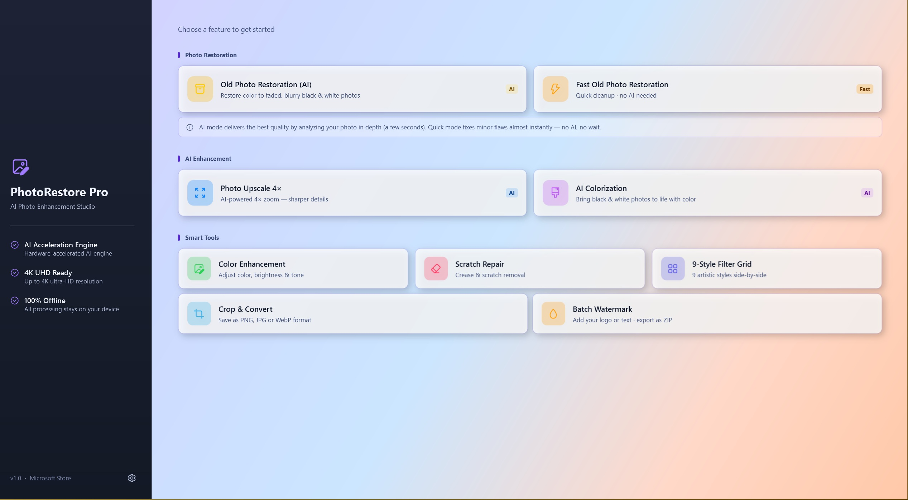
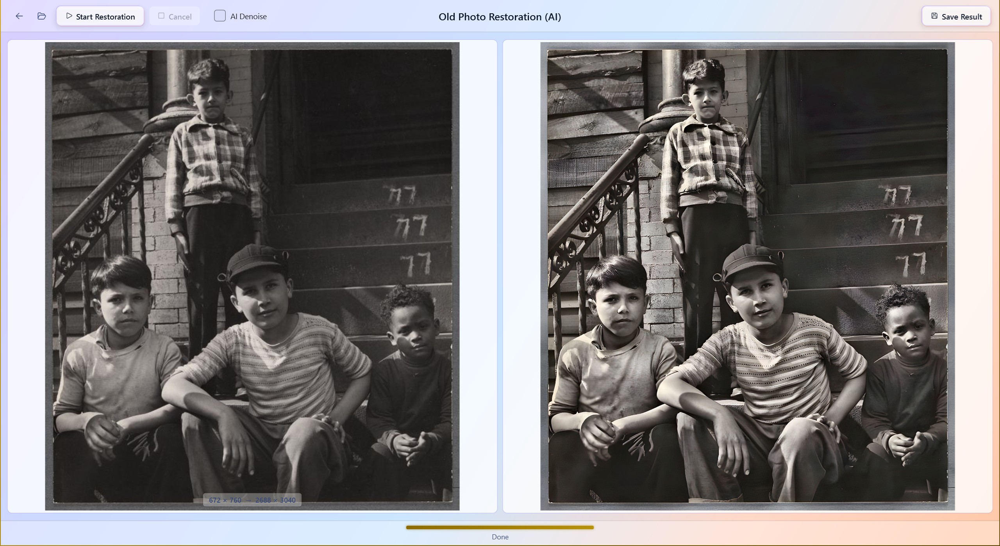
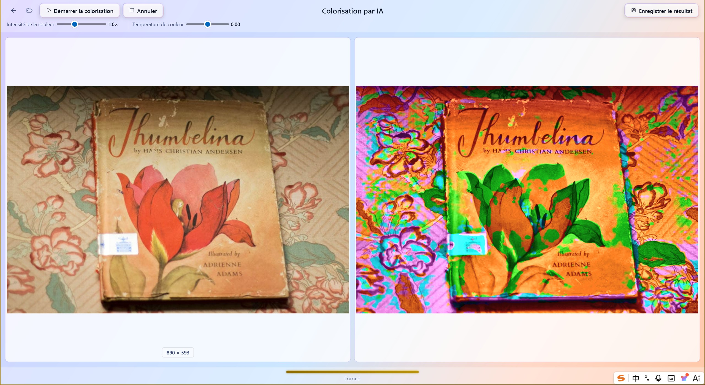

Ein umfassendes KI-Fotoverbesserungsstudio für Windows. Reparieren Sie alte Fotos, skalieren Sie auf 4K, färben Sie Schwarz-Weiß-Bilder ein, entfernen Sie Kratzer und mehr — alles lokal verarbeitet ohne Daten-Upload.
Eine intuitive, flüssige Benutzeroberfläche, die KI-gestützte Fotorestaurierung mühelos macht.



Werkzeug wählen, Foto laden, Start klicken — die KI-Engine läuft vollständig auf Ihrem Gerät. Keine Cloud, kein Konto, kein Warten auf Uploads.
Wählen Sie eines der acht Werkzeuge auf dem Startbildschirm — jede Karte erklärt genau, was sie tut und wie lange es dauert.
Laden Sie ein beliebiges PNG-, JPEG-, WebP-, BMP- oder TIFF-Bild. Klicken Sie auf Start — die KI läuft lokal auf Ihrer GPU über DirectML.
Vergleichen Sie Vorher und Nachher nebeneinander und exportieren Sie ein hochwertiges Ergebnis in Ihrem bevorzugten Format.
Von geschätzten Familienerinnerungen bis zu professionellen Aufträgen — wenn Sie mit Fotos arbeiten, passt PhotoRestore Pro in Ihren Workflow.
Restaurieren Sie verblasste Hochzeitsfotos, färben Sie Schwarz-Weiß-Porträts aus vergangenen Jahrzehnten ein und reparieren Sie geknickte Abzüge — ohne wertvolle Erinnerungen in die Cloud zu senden.
"Ich habe das Hochzeitsfoto meiner Großeltern von 1942 restauriert." — Sarah M., Oregon
Skalieren Sie Kundenaufträge auf 4K hoch, versehen Sie Proofs mit Batch-Wasserzeichen und verbessern Sie Farben mit Ein-Klick-Voreinstellungen — alles offline für die Vertraulichkeit Ihrer Kunden.
"Qualität auf Cloud-Niveau erreicht." — David K., London
Versehen Sie 50 Produktfotos auf einmal mit Batch-Wasserzeichen, passen Sie die Größe fürs Web an und konvertieren Sie Formate — alles in einem Offline-Tool ohne wiederkehrende Abogebühren.
"50 Fotos in unter einer Minute mit Wasserzeichen versehen." — Anna R., Berlin
Der klassische Restaurierungsmodus bewahrt die Originalauflösung für archivtaugliche Scans. Deterministische Algorithmen gewährleisten reproduzierbare Ergebnisse für Dokumentation und Kuratierung.
"Bewahrt die Originalauflösung — keine KI-Artefakte."
Testen Sie alle Funktionen kostenlos. Wenn Sie bereit sind, schalten Sie mit einem einmaligen Kauf im Microsoft Store die unbegrenzte Nutzung frei.
Unbegrenzte KI-Verarbeitung, Export ohne Wasserzeichen. Testen Sie alle Funktionen, bevor Sie sich entscheiden.
Kostenlos
Keine Kreditkarte erforderlich
Einmalkauf oder Abonnement über Microsoft Store. Unbegrenzte KI-Verarbeitung, Batch-Operationen und alle zukünftigen Updates innerhalb der Version.
Einmalkauf
Dauerhafte Nutzung
"Ich habe das Hochzeitsfoto meiner Großeltern von 1942 restauriert. Die KI-Einfärbung hat es auf eine Weise zum Leben erweckt, die ich nicht für möglich gehalten hätte. Meine Mutter hat geweint, als sie es sah."
— Sarah M.
Familienhistorikerin, Oregon
"Als Fotograf war ich skeptisch gegenüber Offline-KI-Tools. PhotoRestore Pro erreichte die Qualität von Cloud-Diensten — und die Fotos meiner Kunden verlassen nie meinen Arbeitsplatz. Ein Game Changer."
— David K.
Porträtfotograf, London
"Ich habe 50 Produktfotos in unter einer Minute mit Batch-Wasserzeichen versehen. Die Oberfläche ist so intuitiv — ich brauchte kein Tutorial. Endlich ein KI-Tool, das Privatsphäre respektiert."
— Anna R.
E-Commerce-Betreiberin, Berlin
Von verblassten Familienfotos bis hin zu niedrig aufgelösten Aufnahmen — PhotoRestore Pro deckt jedes Restaurierungsszenario ab.
Bringen Sie stark gealterte oder verblasste Fotos zurück zum Leben. Eine vollständige KI-Pipeline — Rauschunterdrückung, Farbverbesserung und 4×-Hochskalierung — wird sequenziell für maximale Ausgabequalität angewendet.
Reinigen Sie leicht gealterte Fotos sofort nur mit traditionellen Algorithmen. Keine KI-Wartezeit — Ergebnisse erscheinen in Millisekunden, perfekt für schnelle Korrekturen.
Vergrößern Sie jedes Foto auf das Vierfache seiner ursprünglichen Auflösung mit einem Real-ESRGAN-Modell. Stellt scharfe Details aus komprimierten oder niedrig aufgelösten Bildern mit bemerkenswerter Klarheit wieder her.
Verwandeln Sie Schwarz-Weiß-Fotografien in natürliche, lebendige Farbbilder. Das KI-Modell analysiert den Szenenkontext, um plausible, lebensechte Farben ohne manuelle Eingabe zu erzeugen.
Wählen Sie aus acht verschiedenen visuellen Voreinstellungen — von Natürlich & Klar bis Kinofilm — um Kontrast, Sättigung und Wärme jedes Farbfotos sofort zu verbessern.
Erkennen und entfernen Sie physische Kratzer und Faltlinien von gescannten Fotos mit morphologischem Inpainting. Stellt die visuelle Kontinuität in beschädigten Bereichen wieder her, ohne Artefakte zu hinterlassen.
Vorschau von neun künstlerischen Filtern nebeneinander in einem scrollbaren Thumbnail-Streifen und wählen Sie Ihren Favoriten. Filter umfassen Schwarz & Weiß, Vintage Warm, Kühles Teal, Filmkörnung und mehr.
Ändern Sie die Größe von Fotos auf präzise Abmessungen und zuschneiden Sie frei oder nach vordefinierten Seitenverhältnissen. Perfekt zum Vorbereiten von Bildern für Social-Media-Profile, Druck oder Dokumente.
Wenden Sie Text- oder Bildwasserzeichen auf bis zu 50 Fotos gleichzeitig an. Konfigurieren Sie Position, Deckkraft, Größe und Drehung, dann exportieren Sie den gesamten Batch in einem einzigen Vorgang.
Bereit, Ihre Fotos zu restaurieren?
Kostenlose Testversion — keine Kreditkarte, kein Konto, kein Upload. Ihre Fotos bleiben auf Ihrem Gerät.
Kostenlose Testversion herunterladenAlle KI-Inferenz und Bildverarbeitung laufen vollständig auf Ihrem lokalen Rechner. Kein Konto erforderlich. Keine Internetverbindung nötig.
Jedes Modell und Algorithmus läuft lokal. Die App funktioniert nach der Installation ohne Internetverbindung.
Ihre Bilder werden im Speicher auf Ihrem eigenen Rechner verarbeitet und niemals an einen Server übertragen.
Keine Registrierung, kein Login, kein Abonnement. Laden Sie es aus dem Microsoft Store herunter und beginnen Sie sofort mit der Nutzung.
KI-Modelle laufen über ONNX Runtime mit DirectML-Beschleunigung. Automatischer Rückfall auf CPU bei nicht unterstützter Hardware.
PhotoRestore Pro kommt mit vollständiger UI-Lokalisierung für sieben Sprachen, jederzeit in den Einstellungen umschaltbar.
Beginnen Sie noch heute mit der Restaurierung Ihrer Fotos.
Kostenlos. Offline. Privat.
Kostenlose Testversion herunterladen